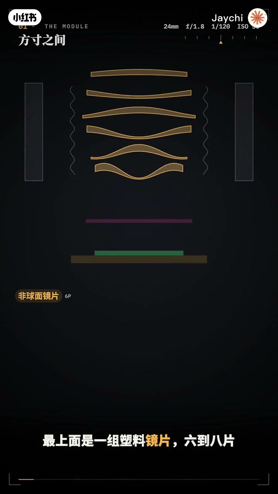
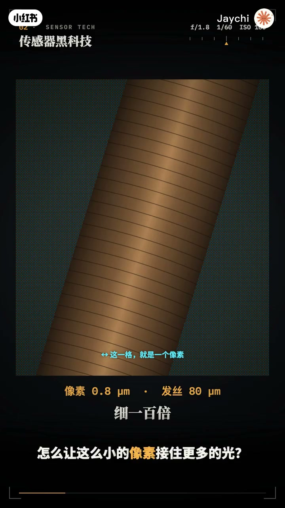
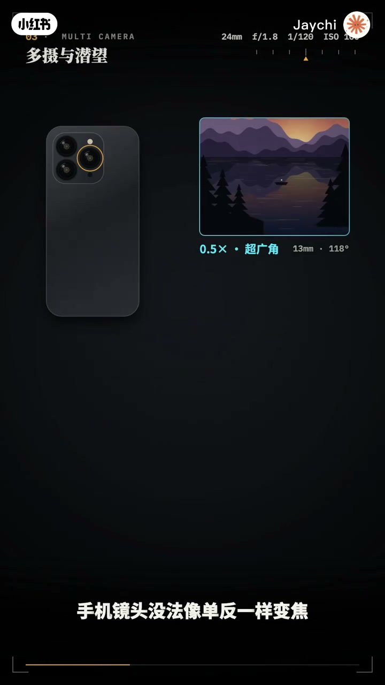
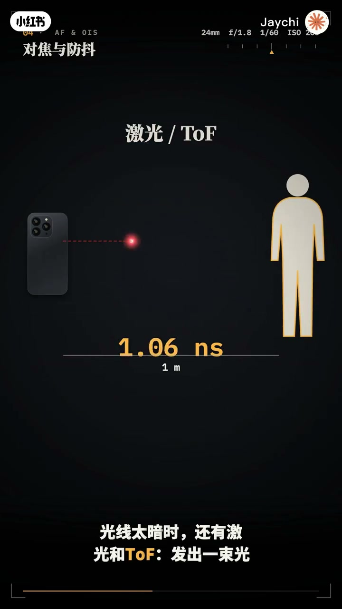
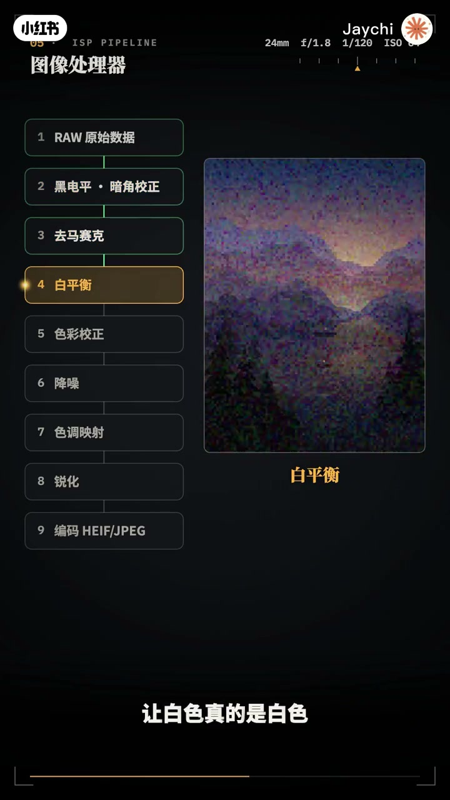
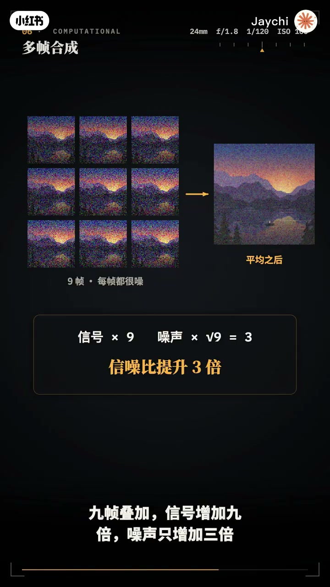
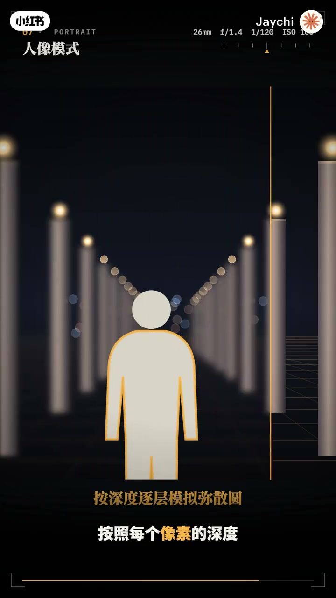

内容要点
「用最简单的动画让你看懂手机拍照原理」教程要点：你每天按下的手机快门背后发生了什么 → 一块指甲盖大小的传感器 → 几片塑料镜片 → 再加上每秒数万一次的计算；详见正文。
知识结构
你每天按下的手机快门背后发生了什么
推动镜片前后移动
逐块对其手抖造成的位移
- 你每天按下的手机快门背后发生了什么
- 一块指甲盖大小的传感器
- 几片塑料镜片
- 再加上每秒数万一次的计算
- 要拍出媲美单反的照片
你每天按下的手机快门背后发生了什么
00:00–02:10你每天按下的手机快门背后发生了什么
你每天按下的手机快门背后发生了什么；一块指甲盖大小的传感器；几片塑料镜片；再加上每秒数万一次的计算；要拍出媲美单反的照片；这一集把手机拍照的硬件和算法一次讲透；先拆开手机的摄像头模组；最上面是一组塑料镜片；6到8片；形状像起伏的波浪；这叫非球面镜片；下面是红外绿光片；传感器；四周是对胶马达和防抖机构；整部手机只有8毫米厚；留给镜头的距离不到1厘米；所以主摄的真实焦距只有7毫米左右；那为什么标志24毫米；这是等效焦距真实焦距乘以传感器的裁切系数；7毫米乘3.5；约等于全画幅的24毫米；光圈也一样；F1.8乘3.5；景深相当于全画幅的F6.3；这就是手机天生拍不出大光圈虚化的原因；手机像素只有0.8微米；比头发丝细100倍；怎么让这么小的像素接触更多的光；第一招 备照式；传统传感器的金属电路挡在感光层上方；备照式把电路翻到背面；光线直接照到光电二级管上；第二招 对战式；把像素层和处理电路上下叠在一起；像素面积更大；读取速度也更快；第三招 像素合并；四个耳针列里；四个相邻像素是同一种颜色；暗光时把它们合成一个大像素；信号变成4倍；噪点减半；所以；4800万像素的传感器；常常输出1200万像素的照片；2亿像素的传感器；甚至16合1；光线充足时；再拆开输出全像素；手机镜头没法像单反一样变焦；于是干脆装上好几颗；超广角；主摄；长焦；各管一段焦距；长焦需要更长的焦距；可手机没有厚度；解决办法是前望式；用棱镜把光线折转90度；让镜头躺进机身里；变焦的时候；手机在几颗镜头之间；无缝切换；两个焦段之间；用主摄才切；再靠多帧算法补回细节；这就是混合变焦；手机对焦靠的是樱圈马达；线圈通电；在磁场中受力


02:08–03:46推动镜片前后移动
推动镜片前后移动；判断往哪里推；靠全像素双合对焦；每个像素一分为二；左右两半看到的画面有位移；就能算出失焦的方向和距离；光线太暗时；还有激光和TOF；发出一束光；测量它飞回来的时间；一米的距离；往返只需要6.7纳秒；再说防抖；陀螺仪每秒上千次；测量手的抖动；马达就朝相反方向移动镜片；或传感器；把画面稳住；这是光学防抖；电子防抖则预留一圈画面边缘；根据陀螺仪数据；每一帧反向平移裁切框；光学加电子；就是拍视频也稳如云台的秘密；传感器输出的；只是一堆原始数字；把它变成照片的；是手机芯片里的；图像信号处理器ISP；第一步；校正黑电屏和镜头暗角；第二步；去马赛克补漆颜色；第三步；白平衡；让白色真的是白色；然后是色彩校正；降噪；色调映射和锐化；最后压缩成照片文件；整条流水线；在几十毫秒内完成；手机拍照真正的魔法；是多帧合成；打开相机的那一刻；它就在不停拍摄；把最近的画面；存在缓存里；你按下快门时；照片其实已经拍好了；这叫零延迟快门；逆光场景；天空太亮；人脸太暗；手机连拍多张；不同曝光的照片；亮处取暗针；暗处取亮针；合成一张高动态范围的照片；为什么多拍几张；就能降噪；因为噪点是随机的；而画面是固定的；九帧叠加；信号增加九倍；噪声只增加三倍；画面干净三倍；夜景模式；把这件事做到极致；几秒内连拍十几帧


03:44–05:18逐块对其手抖造成的位移
逐块对其手抖造成的位移；剔除运动的物体；再叠加成一张；手抖甚至还能变成优势；每一帧之间；亚像素计的微小位移；让传感器从不同位置；采样同一个场景；拼合出比单帧更高的分辨率；这叫超分辨率；既然手机拍不出真正的虚化；那就算出来；两颗镜头；就像两只眼睛；近处的物体；在两幅画面中错位大；远处的物体错位小；由视差；就能算出每个像素的距离；得到深度图；再用神经网络；把人物精确抠出来；按照每个像素的深度；模拟真实镜头的弥散源；逐层虚化背景；难点在边缘；发丝；眼镜；透明的杯子；都容易露现；这正是各家算法比拼的地方；现在的手机；还会先看懂画面；天空；人脸；植物；水面；被神经网络分成不同区域；各自调整亮度和色彩；最后一步；压缩；JPEG把画面切成8x8的小块；转换成不同频域的波纹；丢掉人眼部敏感的高频细节；体积缩小10倍；更新的HEIF格式；同样画质下；文件还能再小一半；最后；六句话；带走全部原理；空间太小；所以焦距短；传感器小；背照；背站；像素合并；榨干每一个光子；多颗镜头加前望；接力完成变焦；马达对焦；陀螺仪防抖；多帧合成；用计算换画质；手机拍照；一半是光学；一半是算法；MING PAO CANADA www.MING PAO TORONTO



口述/画面要点（40段）
结合 Whisper medium 与画面大字整理；专有名词已校对。
你每天按下的手机快门背后发生了什么
一块指甲盖大小的传感器
几片塑料镜片
再加上每秒数万一次的计算
要拍出媲美单反的照片
这一集把手机拍照的硬件和算法一次讲透
先拆开手机的摄像头模组
最上面是一组塑料镜片
6到8片
形状像起伏的波浪
这叫非球面镜片
下面是红外绿光片
传感器
四周是对胶马达和防抖机构
整部手机只有8毫米厚
留给镜头的距离不到1厘米
所以主摄的真实焦距只有7毫米左右
那为什么标志24毫米
这是等效焦距真实焦距乘以传感器的裁切系数
7毫米乘3.5
约等于全画幅的24毫米
光圈也一样
F1.8乘3.5
景深相当于全画幅的F6.3
这就是手机天生拍不出大光圈虚化的原因
手机像素只有0.8微米
比头发丝细100倍
怎么让这么小的像素接触更多的光
第一招 备照式
传统传感器的金属电路挡在感光层上方
备照式把电路翻到背面
光线直接照到光电二级管上
第二招 对战式
把像素层和处理电路上下叠在一起
像素面积更大
读取速度也更快
第三招 像素合并
四个耳针列里
四个相邻像素是同一种颜色
暗光时把它们合成一个大像素